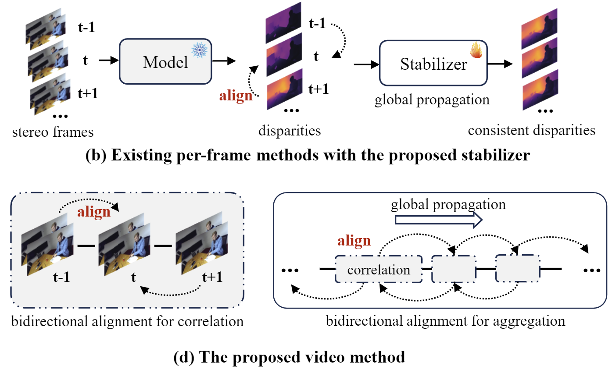
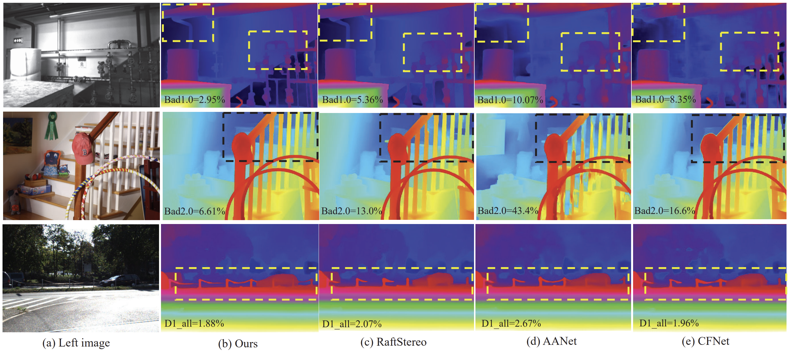
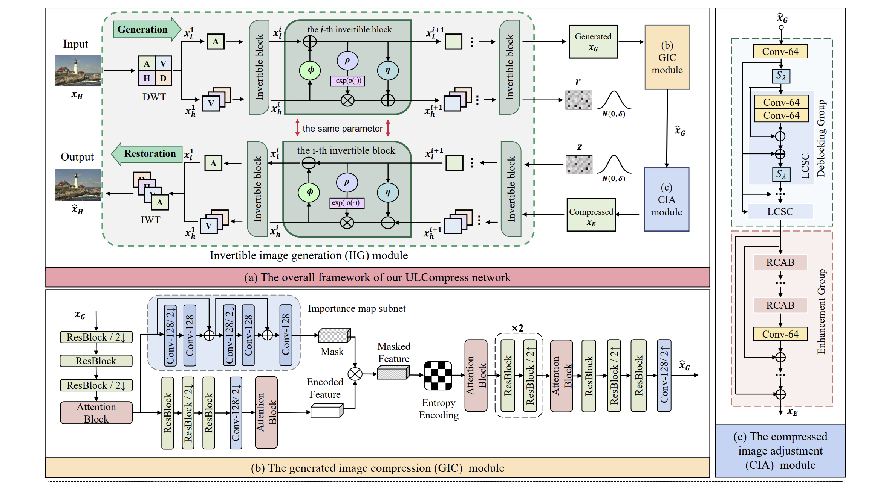

|
Junpeng Jing I am a Ph.D. student at Imperial College London, supervised by Professor Krystian Mikolajczyk. I do research in computer vision, including 3D reconstruction from stereo and 3D learning/understanding. Before starting my Ph.D., I completed my Master at Beihang University, where I was co-supervised by Professor Zhenyu Guan, Mai Xu and Xin Deng. I also completed my Bachelor at Beihang University. |
{kind=link}
Publication(*: equal contribution; †: corresponding) |

|
Stereo Any Video: Temporally Consistent Stereo Matching
Junpeng Jing, Nigel Luo, Ye Mao, and Krystian Mikolajczyk arXiv [Project Page] [Arxiv] [Code] |
|
|
Hypo3D: Exploring Hypothetical Reasoning in 3D
Ye Mao, Nigel Luo, Junpeng Jing†, Anlan Qiu and Krystian Mikolajczyk International Conference on Machine Learning (ICML), 2025 [Project Page] [Arxiv] [Code] |
|

|
Match Stereo Videos via Bidirectional Alignment
Junpeng Jing, Ye Mao, Anlan Qiu and Krystian Mikolajczyk arXiv [Project Page] [Arxiv] [Code] [Data] |

|
OpenDlign: Open-World Point Cloud Understanding with Depth-Aligned Images
Ye Mao, Junpeng Jing†, and Krystian Mikolajczyk Neural Information Processing Systems (NeurIPS), 2024 [Project Page] [Arxiv] [Code] |

|
Match-Stereo-Videos: Bidirectional Alignment for Consistent Dynamic Stereo Matching
Junpeng Jing, Ye Mao, and Krystian Mikolajczyk European Conference on Computer Vision (ECCV), 2024 [Project Page] [Arxiv] [Code] |
|

|
Uncertainty Guided Adaptive Warping for Robust and Efficient Stereo Matching
Junpeng Jing, Jiankun Li, Pengfei Xiong, Jiangyu Liu, Shuaicheng Liu, Yichen Guo, Xin Deng, Mai Xu, Lai Jiang, Leonid Sigal IEEE/CVF International Conference on Computer Vision (ICCV), 2023 [Arxiv] |
|

|
Extremely Low Bit-rate Image Compression via Invertible Image Generation
Fangyuan Gao, Xin Deng, Junpeng Jing, Xin Zou, and Mai Xu IEEE Transactions on Circuits and Systems for Video Technology (TCSVT), 2023 [Paper] |

|
DeepMIH: Deep Invertible Network for Multiple Image Hiding
Zhenyu Guan*, Junpeng Jing*, Xin Deng, Mai Xu, Lai Jiang, Zhou Zhang, Yipeng Li IEEE Transactions on Pattern Analysis and Machine Intelligence (TPAMI), 2022 [Paper] [Code] |

|
HiNet: Deep Image Hiding by Invertible Network
Junpeng Jing, Xin Deng, Mai Xu, Jianyi Wang, Zhenyu Guan IEEE/CVF International Conference on Computer Vision (ICCV), 2021 [Paper] [Code] |
Competition |

|
Winner (1st place) on Stereo Matching Track
Robust Vision Challenge, ECCV Workshop 2022 [Link] [Certificate] |
|
|
6th place on Stereo Image Super-Resolution Track
NTIRE Challenge, CVPR Workshop 2022 [Link] |
Teaching |
|
|
Academic Services |
|
|
Thanks to Jon Barron for sharing the source code of his site. |